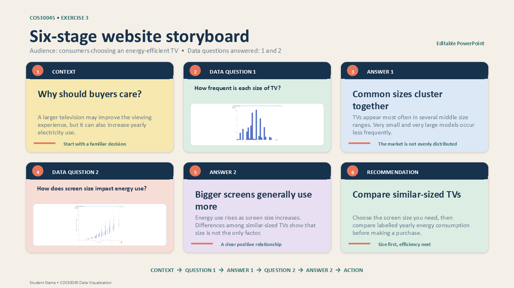
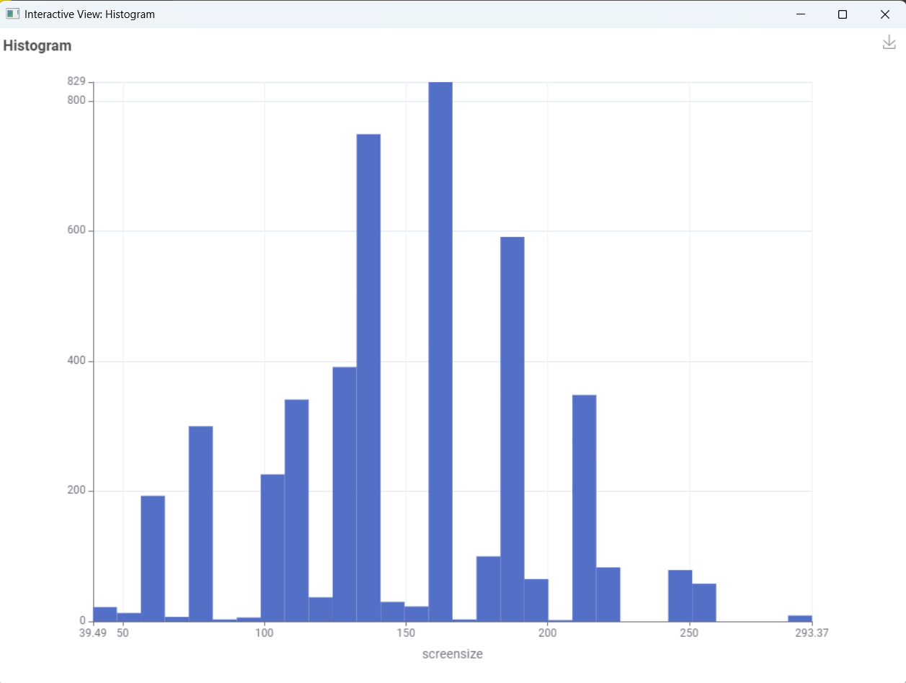
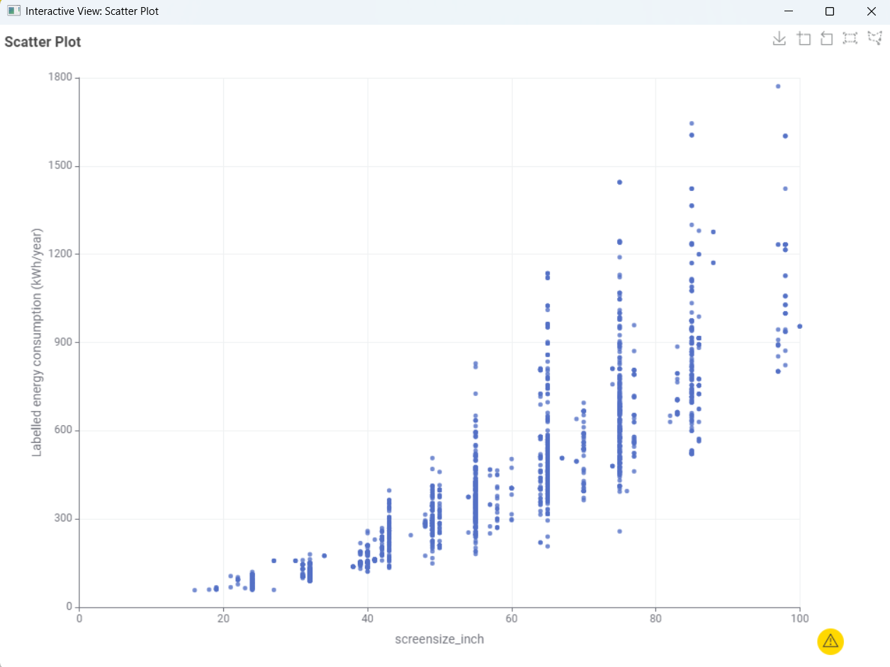

TV Size and Energy Consumption
Televisions are available in many different sizes, but choosing a larger screen may also affect yearly electricity consumption. This data story investigates how frequently different TV sizes appear and how screen size relates to labelled energy consumption.
Target audience: Consumers who are planning to purchase a television and want to compare screen size and energy efficiency.
Six-Stage Storyboard
The storyboard below shows how the website guides the reader from the initial consumer concern to the evidence, findings and final recommendation.

Data Question 1
How frequent is each size of TV?
Before considering energy consumption, it is useful to understand the distribution of television sizes represented in the dataset. The histogram shows how frequently the different screen-size values occur.

Finding: The dataset contains a wide range of television sizes, but TVs appear most frequently within several middle size ranges. Very small and very large televisions occur less frequently.
Data Question 2
How does screen size impact energy consumption?
The scatter plot compares television screen size in inches with labelled yearly energy consumption in kilowatt-hours per year. Each point represents a television in the dataset.

Finding: The scatter plot shows a clear positive relationship. Larger televisions generally consume more energy per year. However, televisions of similar sizes still show different consumption levels, indicating that screen size is important but is not the only factor affecting energy use.
What Does This Mean for Consumers?
Consumers should first choose a television size that suits their needs and then compare the labelled yearly energy consumption of similar-sized models. Choosing an unnecessarily large television may result in higher electricity consumption.